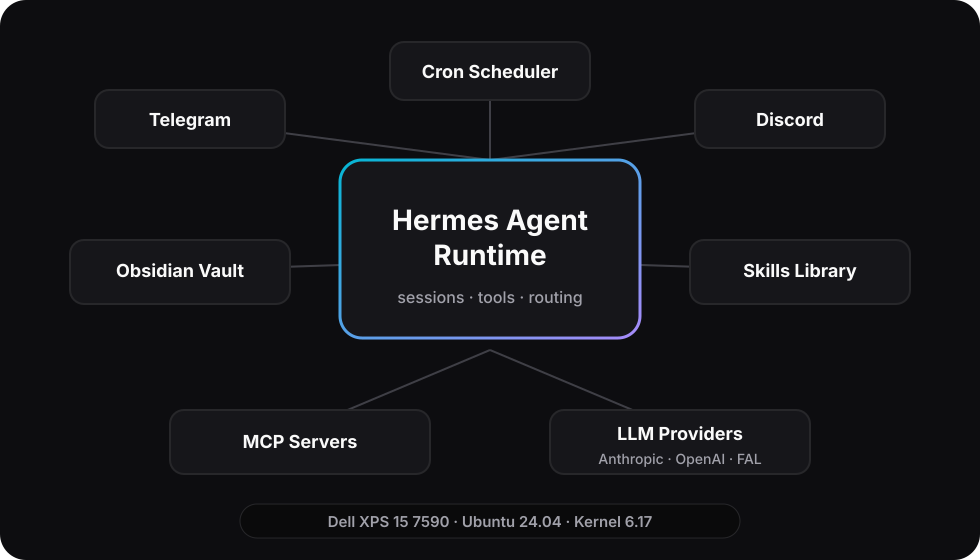

Routing
One normalized message path keeps Discord, Telegram, and scheduled jobs consistent.
Multi-agent system on Linux — message routing, autonomous workflows, persistent memory. Achilles, my Discord-resident assistant, lives at the center.
Overview
Hermes Server is the operating layer I use to connect chat interfaces, memory, tools, and scheduled work. It is intentionally small enough to run on a personal Linux workstation, but structured like production software: explicit routing, durable notes, supervised services, and auditable automation.

One normalized message path keeps Discord, Telegram, and scheduled jobs consistent.
A git-versioned Obsidian vault gives agents durable context without hiding state.
Procedural playbooks load only when relevant, keeping prompts focused.
Cron-triggered agents handle briefs, QA sweeps, and maintenance loops.
Assistant
Achilles is the assistant I keep closest to the daily workflow: a Discord-resident operator with a sharp persona, access to bounded tools, and enough memory to keep context across days.
It can coordinate image generation, video generation, YouTube transcription, scheduled jobs, and small code execution tasks. The important design choice is not that it can call tools; it is that tool calls are mediated through narrow interfaces with clear user feedback.
Every long task reports status like a teammate would: accepted, planned, running, blocked, delivered. That makes the system useful even when generation takes minutes instead of seconds.
Routing
The gateway treats every inbound event as a platform-neutral message. Discord and Telegram have different transport details, but the assistant sees a stable shape: user, channel, text, attachments, session, and delivery target.
 Read the case study →
Read the case study →
# illustrative
async def route(msg: InboundMessage) -> Response:
session = await sessions.load_or_create(msg.user)
response = await agent.run(session, msg.text)
return await platform.send(msg.platform, response)
Memory
Hermes uses a git-versioned Obsidian vault as a readable memory layer. The agent can read durable notes, write summaries, and leave changes in plain Markdown instead of trapping important state inside a database nobody reviews.
Procedures
Skills are short operational procedures that the agent loads when a task calls for them. That keeps the base prompt small while still giving the system repeatable workflows for research, media work, GitHub triage, productivity, and software delivery.
---
name: example-workflow
description: Use when the task needs a repeatable checklist.
---
# Goal
State the outcome in plain language.
# Inputs
- Required context
- Constraints
# Procedure
1. Inspect the current state.
2. Choose the smallest useful action.
3. Verify the result before reporting.Autonomy
Some work is more useful when it happens without a fresh prompt. Hermes runs scheduled agents for daily news briefs, weekly mission control, autonomous QA, and maintenance reminders. Each run starts with a bounded objective and delivers a short artifact back to a human-visible channel.
Read the case study →
Production-grade reliability on consumer hardware — systemd-managed, auto-restart, health-monitored.
I like building practical systems where AI agents meet real operating constraints: state, failures, permissions, observability, and human trust. If that is the kind of work your team values, I would be glad to talk.
 Python
Python systemd
systemd Linux
Linux Ubuntu
Ubuntu GitHub Actions
GitHub Actions Docker
Docker Tailwind
Tailwind Anthropic
Anthropic OpenAI
OpenAI Obsidian
Obsidian Discord
Discord Telegram
Telegram Bash
Bash Git
Git GNOME
GNOME